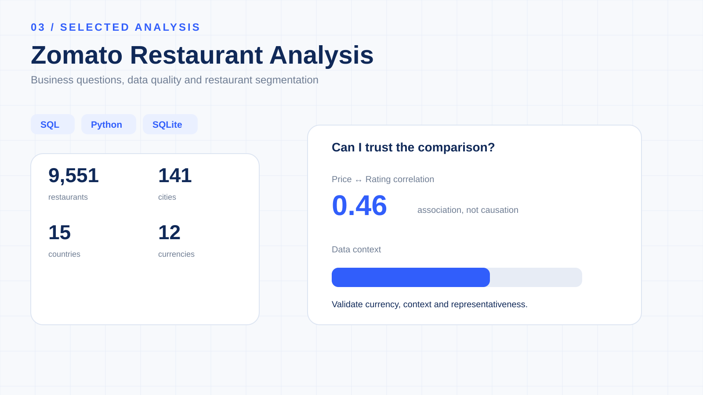

Zomato Restaurant
Business Analysis.
An end-to-end analysis of restaurant pricing, ratings, customer engagement, online-delivery adoption, cuisine popularity and city-level market structure.

What does the restaurant data actually tell us?
The project started with SQL business questions and expanded into Python EDA and advanced analysis to understand restaurant performance, pricing, customer engagement and digital-delivery adoption.
9,551 restaurants. 15 countries. 141 cities.
The dataset contains 18 columns covering restaurant identity, location, cuisine, pricing, ratings, votes, table booking and online-delivery availability.
| Field | Business meaning | Used for |
|---|---|---|
| RestaurantName | Restaurant identity | Restaurant-level analysis |
| CountryName / City | Geographic market | Country and city comparisons |
| Cuisines | Cuisine combination | Cuisine engagement analysis |
| Price_range / Average_Cost_for_two | Pricing | Price and value analysis |
| Rating / Votes | Recorded customer response | Quality and engagement analysis |
| Has_Online_delivery | Digital delivery availability | Delivery adoption analysis |
| Has_Table_booking | Table booking availability | Service-model analysis |
Validate before interpreting.
The analysis checks missing values, zero-engagement records and duplicate Restaurant IDs before moving into business KPIs. This separates data-quality issues from genuine restaurant performance patterns.
Votes are treated as a recorded engagement measure, not as unique customers or orders. Low-vote restaurants should therefore be interpreted differently from highly reviewed restaurants.
The correlation changed when the market context changed.
The same restaurant attributes show a very different relationship when the dataset is filtered to India. The comparison below makes the analytical context visible before interpreting the pricing relationship.

From SQL questions to a broader analytical framework.
The original SQL case study covers Q1–Q8. The continuation extends the work from Q9 onward using Python, Pandas and SQLite.
What emerged from the analysis?
Engagement is skewed
Mean votes are approximately 157, compared with a median of 31 and a maximum of 10,934.
Delivery gap
3,022 Indian restaurants serving Indian cuisine do not offer online delivery in the dataset.
Price & engagement
Price Range 1 averages 2.33 rating / 36 votes, while Price Range 4 averages 3.66 rating / 404 votes.
City + cuisine
New Delhi — North Indian | Mughlai records the highest city–cuisine vote total at 27,951.
Value-for-money
A project-defined rule combines rating ≥ 4.5, votes > 500 and average cost for two < ₹800.
Market structure
City profiles combine supply, ratings, votes, pricing and delivery adoption to provide broader market context.
Comparability, representativeness, engagement definitions and analytical thresholds are documented throughout the project.
Turning restaurant records into business segments.
The advanced notebook adds correlation analysis, performance segmentation, value-for-money analysis and city-level market profiling.
What could the analysis support?
Delivery expansion
Investigate cities with meaningful restaurant supply and engagement alongside lower delivery adoption.
Value discovery
Identify restaurants combining strong ratings, recorded engagement and relatively affordable pricing.
Cuisine discovery
Use city-level cuisine engagement to support localized restaurant discovery.
Market differentiation
Compare premium-oriented and value-oriented city profiles using multiple supporting metrics.
Engagement strategy
Separate low-recorded-engagement restaurants from highly reviewed restaurants when evaluating performance.
Data governance
Retain validation checks before using restaurant data for operational KPIs or decisions.
SQL inside Python, not SQL in isolation.
The project combines relational querying with Python-based EDA so the analysis can move from business questions to validation, statistical exploration and decision-oriented interpretation.
ROW_NUMBER() window-function approach are used to identify the most-voted cuisine in each city.What the dataset cannot establish.
Snapshot data
The dataset does not provide historical restaurant performance trends.
Currency context
Multiple countries and currencies make direct global cost comparisons misleading without normalization.
Votes ≠ customers
Recorded votes should not automatically be interpreted as unique customers or orders.
Association ≠ causation
Correlation analysis identifies association and does not establish causal relationships.
Project thresholds
Restaurant segments and the opportunity score use project-defined analytical rules.
Decision validation
Recommendations require current operational, financial and historical data before implementation.